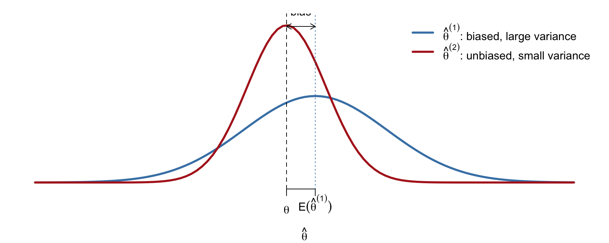
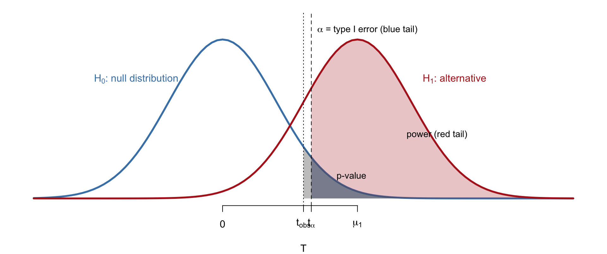
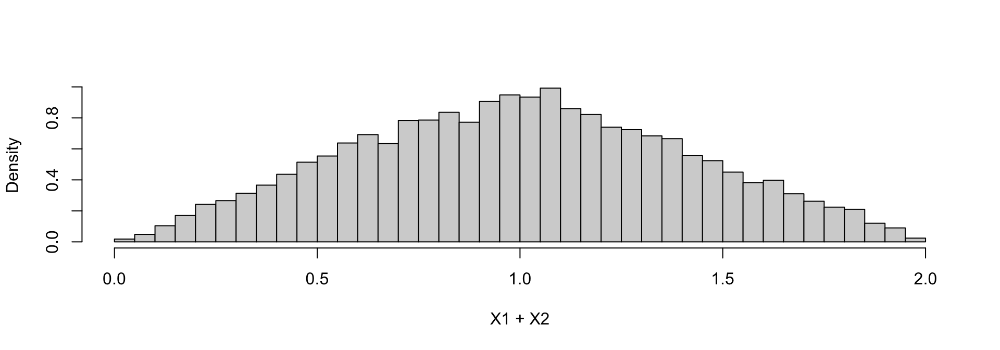
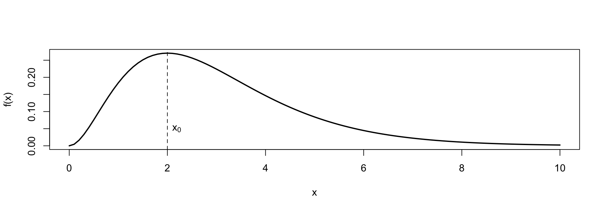
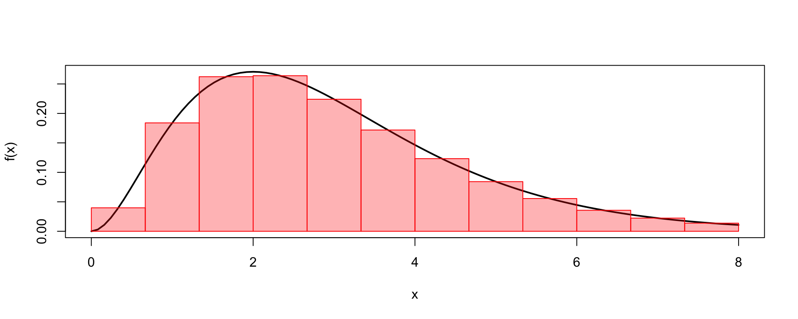

[1] 1[1] 0Introduction to Statistical Computation
An estimator is a function of the data: \hat\theta = \hat\theta(x_1, \ldots, x_n)
Familiar examples:
Since \hat\theta depends on random data, it has a sampling distribution.

The log-likelihood of \theta: \ell(\theta) = \log f(x_1, \ldots, x_n \mid \theta) = \log \prod_{i=1}^n f(x_i \mid \theta) = \sum_{i=1}^n \log f(x_i \mid \theta)
The MLE is the maximizer: \hat\theta_{\text{MLE}} = \arg\max_\theta \ell(\theta)
Test H_0: \mu = \mu_0 against H_1: \mu \neq \mu_0 using T = \frac{\bar x - \mu_0}{S/\sqrt{n}}

All three are tail probabilities of a distribution that is often unknown in closed form.
Combine a prior \pi(\theta) with the likelihood f(x \mid \theta): p(\theta \mid x) = \frac{f(x \mid \theta)\,\pi(\theta)}{\int f(x \mid \theta)\,\pi(\theta)\, d\theta}
The denominator is an integral over \theta; for most models it has no closed form.
| Task | Object needed | Typical difficulty |
|---|---|---|
| Point estimation | Sampling distribution of \hat\theta; maximizer of \ell(\theta) | No closed form |
| Hypothesis testing | Null distribution of T | Unknown for general data |
| Bayesian inference | \int f(x\mid\theta)\pi(\theta)\,d\theta; E(\theta \mid x) | High-dimensional integral |
Each task reduces to a computational problem: calculating, simulating, optimizing, or integrating.
Even simple calculations are not trivial on a computer:
Computers store numbers with finite precision, which leads to
[1] 1[1] 0[1] 0[1] -1373.279Lecture on computer arithmetic: how numbers are stored and how to avoid these errors.
Monte Carlo: replace a probability calculation with repeated random experiments.
Generate X_1, X_2 \overset{iid}{\sim} \text{Unif}(0,1). What is the distribution of X_1 + X_2?

Repeat many times: draw x_1, \ldots, x_n, compute the statistic.
\sum_i x_i, \qquad \sum_i (x_i - \bar x)^2, \qquad T = \frac{\bar x - \mu_0}{S/\sqrt n}
This gives empirical approximations to
Lecture on random numbers and Monte Carlo: pseudo-random generation, transformations, LLN/CLT, evaluating estimators and tests.
Find x_0 = \arg\max_x f(x).

For MLE, f = \ell(\theta); there is no closed form, so the maximum is found by iterative search.
Lecture on MLE and optimization: Newton–Raphson, Fisher scoring, Nelder–Mead, gradient methods, stochastic gradient descent.
Quantities of interest are integrals: E(X) = \int x f(x)\,dx, \qquad V(X), \qquad \int f(x\mid\theta)\pi(\theta)\,d\theta
Two approaches:
For the posterior p(\theta \mid x), direct sampling is impossible, so Markov chain Monte Carlo is used.

\int_a^b f(x)\,dx \approx \sum_{j=1}^k f(m_j)\,\Delta x
| Topic | Statistical task |
|---|---|
| Computer arithmetic | Reliable calculation of likelihoods and variances |
| Random numbers and Monte Carlo | Sampling distributions, evaluating estimators and tests |
| MLE and optimization | Point estimation without closed forms |
| Numerical integration and MCMC | Bayesian inference |
Throughout: R programming, vectorization, and efficient code.